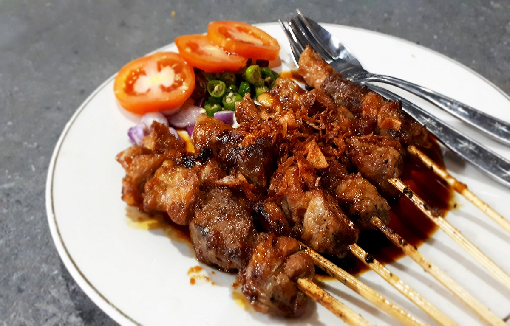

Sate Betawi adalah makanan khas Jakarta yang terkenal dengan cita rasa gurih dan kaya rempah. Berbeda dengan sate pada umumnya yang menggunakan bumbu kacang atau kecap, Sate Betawi disajikan dengan kuah santan kental yang dibumbui berbagai rempah seperti ketumbar, jintan, bawang putih, dan kemiri.
Daging yang digunakan biasanya daging sapi atau jeroan yang dipotong kecil-kecil, kemudian ditusuk dan dibakar hingga matang serta harum. Setelah dibakar, sate disiram dengan kuah santan yang lezat sehingga menghasilkan perpaduan rasa gurih, manis, dan sedikit pedas.
Sate Betawi umumnya disajikan bersama lontong atau nasi, serta dilengkapi dengan bawang goreng dan emping sebagai pelengkap. Hidangan ini menjadi salah satu ikon kuliner Betawi yang mencerminkan kekayaan budaya dan tradisi masyarakat.